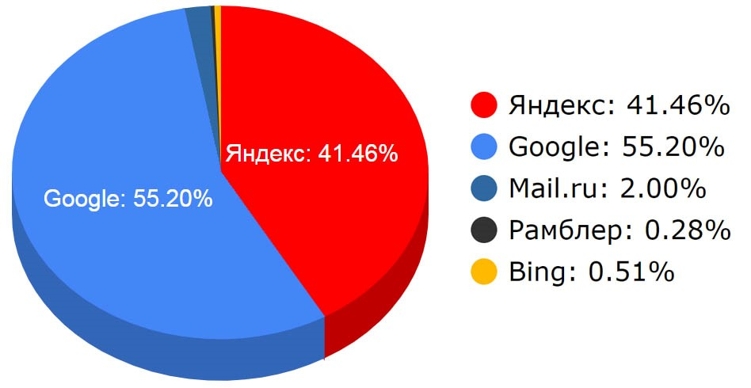

В настоящее время существует 3 основных международных поисковых системы - Google, Yahoo и MSN Search, имеющих собственные базы и алгоритмы поиска. Большинство остальных поисковых систем использует в том или ином виде результаты 3 перечисленных. Например, Mail.ru использует базу Google, а AltaVista, Lycos - базу Yahoo.
Российская аудитория практически полностью распределяется между двумя поисковыми системами: Яндекс и Google. По состоянию на ноябрь 2012 года у Яндекса 51.4% рынка, у Google — 34.7%.
Помимо широко распространенных поисковых систем прямого назначения, существует большое количество специализированных, которые работают с тематическими запросами. Многие из них созданы для узконаправленного поиска различной медиаинформации: фильмов, музыки, фотографий и т.п.
